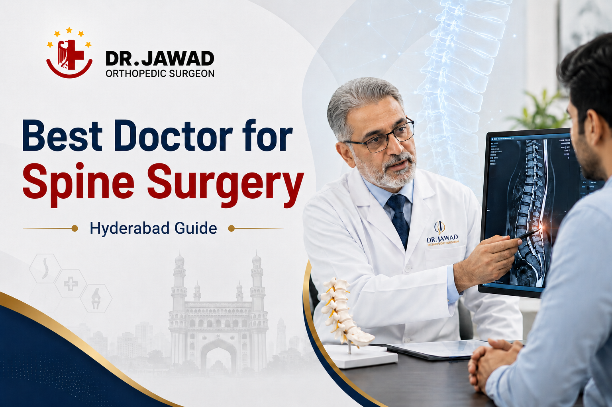

Medically Reviewed by
DR. MIR JAWAD ZAR KHANMBBS, MS - Orthopedic
M.CH-(Ortho) Joint
Replacement surgeon
Who Is the Best Doctor for Spine Surgery in Hyderabad? A Patient's Complete Guide
When back pain becomes unbearable, when a slipped disc stops you from sleeping, or when your leg goes numb every time you sit down for more than ten minutes, one question becomes urgent: who is the best doctor for spine surgery in Hyderabad?
It is not a simple question to answer online. Search results list dozens of names, hospitals, and clinics. Advertisements appear everywhere. And most patients have no clear framework for deciding who to trust with something as consequential as their spine.
This guide gives you that framework. It tells you what to look for in a spine surgeon, how to evaluate credentials and technology, what questions to ask before committing to treatment, and why Dr. Mir Jawad Zar Khan is consistently regarded as one of the leading spine surgery specialists in Hyderabad.
Orthopaedic Surgeon or Neurosurgeon: Who Should Treat Your Spine?
This is usually the first point of confusion for patients. Spine surgery is performed by two types of specialists: orthopaedic surgeons with advanced spine training and neurosurgeons.
Both can be excellent. The key distinction is in their training focus. Neurosurgeons receive deep training in conditions affecting the spinal cord and nervous system, with a broad focus on the entire nervous system including the brain. Orthopaedic spine surgeons train with a structural emphasis, covering the bones, discs, joints, ligaments, and mechanical architecture of the spine alongside nerve decompression and spinal reconstruction.
For most common spine conditions including disc herniation, sciatica, spinal stenosis, spondylolisthesis, and spinal instability, an experienced orthopaedic spine surgeon is the ideal specialist. The most important factor is not which category the surgeon belongs to, but how much dedicated spine experience they have and what their surgical outcomes look like.
Dr. Mir Jawad Zar Khan is a senior orthopaedic surgeon with over 26 years of experience and international fellowship training in Germany. His spine practice covers the full spectrum of common and complex spinal conditions, from conservative non-surgical management to advanced minimally invasive and open surgical procedures.
6 Things to Look for When Choosing the Best Doctor for Spine Surgery
Before naming any surgeon as the right choice for you, here is what should go into that decision.
1. Qualifications and Fellowship Training
A strong spine surgeon holds a postgraduate degree in orthopaedics or neurosurgery and, ideally, has completed additional fellowship training specifically focused on spine or arthroplasty procedures. Fellowship training at a recognised national or international centre exposes the surgeon to high volumes of complex cases and techniques that cannot be covered in a standard residency alone.
Dr. Jawad holds an MBBS, MS (Ortho), and M.Ch (Ortho), and completed his Fellowship in Arthroplasty at a leading institute in Munich, Germany. He also trained at Breach Candy Hospital Mumbai and Max Hospital Delhi under nationally recognised specialists. That combination of domestic and international training is rare in Hyderabad.
2. Volume and Experience
Experience matters enormously in spine surgery. Surgeons who perform high volumes of procedures consistently show better outcomes in the research literature. When evaluating a spine surgeon, ask directly how many procedures of your specific type they perform each year.
Over 26 years in practice, Dr. Jawad has performed thousands of orthopaedic and spine procedures. This volume translates directly into diagnostic accuracy, surgical precision, and better handling of unexpected intraoperative situations.
3. Technology at the Surgical Facility
The technology available in the operating theatre is as important as the surgeon's own skill. Modern spine surgery depends on tools such as 3D C-Arm intraoperative imaging, which allows the surgeon to see the spine in real time during the procedure, and a surgical navigation system, which maps the patient's spinal anatomy for precision implant placement.
Most significantly, Intraoperative Neurophysiological Monitoring (IONM) is a critical safety tool. IONM continuously tracks spinal cord and nerve function throughout the procedure. If any signal change is detected, the surgical team is alerted immediately and can adjust. This technology dramatically reduces the risk of nerve-related complications during complex spine surgery and is not available at every hospital in Hyderabad.
Our facility uses all three: 3D C-Arm imaging, surgical navigation, and IONM as standard for spine procedures. Very few centres in Hyderabad offer this combination routinely.
4. A Non-Surgical First Philosophy
The best spine surgeons do not push every patient toward an operation. A surgeon who recommends surgery at the first appointment, before exploring conservative options, is a red flag. Most spine conditions, including disc herniations, early stenosis, and chronic back pain, respond well to structured non-surgical treatment.
At our centre, non-surgical care is always explored first. Physiotherapy, image-guided injections, nerve blocks, ESWT, and lifestyle modification are offered through a dedicated non-surgical spine treatment programme. Surgery is recommended only when it is genuinely necessary.
5. Transparent Communication
Your surgeon should be able to explain your diagnosis in plain language, present all available treatment options including non-surgical alternatives, and discuss realistic outcomes and risks clearly. Patients who feel rushed, uninformed, or pressured should trust that instinct and seek another opinion.
6. Verified Recognition and Patient Outcomes
Awards, peer recognition, and patient outcomes provide additional evidence of consistent quality. These should be verified and traceable, not just claims on a website.
Dr. Jawad has been awarded the Times of India Award for Iconic Joint Replacement Surgeon of Telangana, recognised in the Times Health Survey 2023, and awarded by the Hon'ble 14th President of India Shri Ram Nath Kovind for contributions to healthcare. The facility has been named India's Most Trusted Orthopaedic Treatment Centre 2022.
Questions to Ask Your Spine Surgeon Before Agreeing to Treatment
Before you commit to any treatment plan, surgical or otherwise, these questions will give you the information you need to decide confidently.
- How certain are you of my diagnosis? A good surgeon will clearly explain what imaging shows and what it means for your specific symptoms. If the diagnosis feels uncertain, ask what additional investigations would help confirm it.
- What happens if I do not have surgery? For most spine conditions, waiting or pursuing conservative care is a valid option. Your surgeon should explain what the likely trajectory of your condition is without surgery.
- What type of procedure would you recommend and why? There are usually multiple surgical approaches to the same condition. Ask why your surgeon is recommending a specific technique over alternatives.
- How many of this procedure do you perform each year? Volume correlates with outcomes. A surgeon who performs your procedure regularly will have seen a wider range of intraoperative scenarios than one who performs it occasionally.
- Will IONM be used during my surgery? This question alone tells you a great deal about the facility's commitment to safety during spine procedures.
- What is the expected recovery timeline? Recovery varies significantly by procedure. Understanding the realistic timeline helps you plan for work, family responsibilities, and rehabilitation.
- What are the risks specific to my case? Every patient is different. Ask your surgeon to walk you through the risks that apply to your specific anatomy, age, and medical history.
What Conditions Does Dr. Jawad Treat Through Spine Surgery?
Our spine surgical treatment programme covers the full range of spinal conditions that require operative management. These include lumbar disc herniation causing sciatica, cervical disc disease causing neck and arm pain, spinal stenosis in the lumbar and cervical spine, spondylolisthesis with instability, vertebral compression fractures treated with vertebroplasty or kyphoplasty, and spinal deformity including scoliosis in selected cases.
For patients whose condition has not yet reached the stage where surgery is the right answer, the same specialist manages the non-surgical pathway. The advantage of being treated at this centre is that your care is not fragmented. The same experienced spine surgeon assesses you, recommends the appropriate treatment, and oversees your recovery, whether that treatment is injections and physiotherapy or a microdiscectomy.
The broader overview of spine care at this facility is available on the best spine surgeon in Hyderabad page, and information on non-operative options is on the non-surgical spine treatment page. For patients with sciatica specifically, our sciatica treatment in Hyderabad page explains all available treatment pathways in detail.
Why Patients from Across India Choose This Centre
Patients searching for the best doctor for spine surgery in Hyderabad often come from outside the city after an unsatisfactory experience elsewhere, or after being told they need surgery without having a clear second opinion. The following is what they consistently tell us made the difference.
The diagnosis was explained properly for the first time. Non-surgical options were presented before any surgical discussion. The technology was visibly more advanced than what they had encountered previously. And the surgeon took the time to answer all their questions without making them feel rushed.
Patients travel from Telangana, Andhra Pradesh, Maharashtra, Karnataka, and internationally to receive treatment here. For those coming from other cities or abroad, our team provides teleconsultation support, appointment coordination, and post-surgical follow-up guidance to make the experience as seamless as possible.
For patients with additional orthopaedic concerns, our specialist team covers everything from pain management to joint replacement surgery and arthroscopy and sports injuries, ensuring that patients with complex or multi-condition presentations receive fully coordinated care from a single experienced team.
The Bottom Line
Choosing the best doctor for spine surgery is not about finding the most prominent name on a Google search page. It is about finding a surgeon whose qualifications, experience, technology access, and treatment philosophy align with what your condition actually needs.
If you are in Hyderabad or travelling from elsewhere in India, Dr. Mir Jawad Zar Khan and the spine team at our centre offer the combination of international training, diagnostic precision, advanced intraoperative technology, and a patient-centred approach that defines truly excellent spine care.
Book your spine consultation today. Our team will confirm your appointment within 24 hours.
Frequently Asked Questions
1. Is there a difference between an orthopaedic spine surgeon and a neurosurgeon for back surgery?
Both can be appropriate for spine surgery depending on the condition. For most disc, nerve, and structural spinal conditions, an orthopaedic spine surgeon with dedicated fellowship training is the right choice. The surgeon's specific experience with your condition matters more than which category they belong to.
2. How do I know if I need spine surgery or if non-surgical treatment is enough?
A thorough clinical assessment and MRI review will clarify this. The majority of patients with disc problems, sciatica, and even moderate spinal stenosis can be managed without surgery. Surgery is the right choice when conservative treatment has failed or when neurological function is at risk.
3. Can I get a second opinion before committing to spine surgery?
Yes, and you should. A trustworthy spine surgeon will always support the idea of a second opinion. If your current surgeon discourages it, that itself is useful information.
4. How long does recovery from spine surgery take in Hyderabad?
Recovery depends on the procedure. Microdiscectomy patients typically walk within 24 hours and return to normal activity within four to six weeks. Spinal fusion recovery takes longer, typically three to six months for full return to function, supported by a structured physiotherapy programme.
If back pain is travelling down your leg, do not wait for it to worsen. Dr. Jawad at Germanten Hospitals, Attapur, provides expert diagnosis and mostly non surgical treatment for slip disc and sciatica. Call 9989635555 to book a consultation.


DR. MIR JAWAD ZAR KHAN
MBBS, MS - Orthopedic, M.CH-(Ortho) Joint Replacement Surgeon
As the visionary Chairman and Managing Director of Germanten Hospitals, Hyderabad, Dr. Mir Jawad Zar Khan brings over two decades of surgical leadership to the field. He is dedicated to transforming lives through evidence-based treatments, advanced robotic technology, and a commitment to patient quality of life.